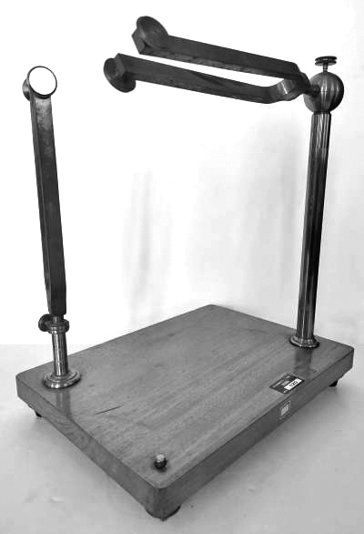
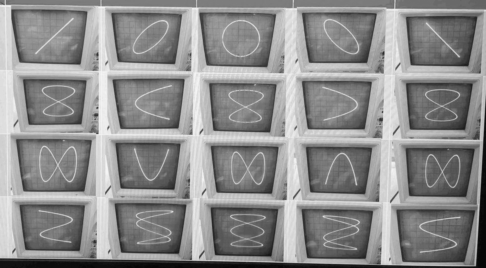

Un'onda sonora è una perturbazione elastico-meccanica che nasce da una sorgente e si propaga nel tempo e nello spazio. Questo fenomeno trasporta energia attraverso un mezzo senza comportare uno spostamento della materia.
Un'onda sonora può essere tracciata su un grafico cartesiano posizionando il tempo sull'asse delle ascisse e lo spostamento delle particelle sull'asse delle ordinate.
Le caratteristiche principali di un’onda sonora sono:
Periodo: Il tempo impiegato da una particella per compiere un'oscillazione completa e tornare al punto iniziale (distanza tra due creste successive).
Frequenza: Il numero di periodi compiuti in un secondo, misurato in Hertz (Hz).
Ampiezza: La distanza massima percorsa dalla particella dalla sua posizione di riposo. Da essa si calcolano la pressione e l'intensità acustica, misurate in decibel (dB).
Le onde si dividono in tre grandi categorie in base al loro andamento grafico:
Onde Sinusoidali: Perfettamente regolari e periodiche, in cui i picchi sono speculari alle valli. Rappresentano i toni puri.
Onde Periodiche Non Sinusoidali: Regolari e ripetitive, ma dalla forma complessa e ricca di anomalie.
Onde Aperiodiche: Caotiche e prive di regolarità.
Jules Antoine Lissajous (1822–1880) è stato un matematico e fisico francese. Inventò un apparato in grado di visualizzare otticamente le oscillazioni, un fascio di luce veniva riflesso in successione da due specchi fissati su altrettanti diapason vibranti, disposti perpendicolarmente l'uno rispetto all'altro. La proiezione risultante su una parete mostrava delle curve geometriche.

Le figure di Lissajous sono traiettorie bidimensionali generate dall'incontro di due moti armonici ortogonali, descritti da funzioni sinusoidali sfalsate. Dal punto di vista matematico, queste composizioni geometriche sono rappresentate e definite proprio attraverso un sistema di due equazioni parametriche:
I coefficienti determinano il numero di lobi e la struttura della figura.
L'aspetto finale della curva dipende strettamente da due fattori:
1. Rapporto delle frequenze: Se il rapporto è un numero razionale (frequenze commensurabili), la curva è chiusa e periodica. Se il rapporto è irrazionale, la curva non si chiude mai. Spesso queste forme ricordano nodi tridimensionali proiettati su un piano.
2. Differenza di fase: Con un rapporto di frequenze pari a 1:1, la figura varia in base alla fase iniziale: diventa una linea retta se i segnali sono in fase, un'ellisse per sfasamenti intermedi, o un cerchio perfetto se i segnali sono in quadratura (sfasati di 90° con uguale ampiezza). Con altri parametri si può generare persino una parabola.
L'oscilloscopio è uno strumento di misura elettronico universale che visualizza l'andamento dei segnali elettrici. Nella sua modalità standard, mostra un grafico bidimensionale nel dominio del tempo, dove l'asse verticale (Y) indica la tensione e l'asse orizzontale (X) rappresenta il tempo.
I modelli analogici mostrano il segnale in tempo reale in modo fluido e continuo, i modelli digitali campionano la forma d'onda, la memorizzano e permettono di effettuare calcoli e letture dirette sui dati.
Attivando la modalità X-Y, la base dei tempi interna dello strumento viene scollegata. In questo assetto: Il segnale applicato al Canale 1 (CH1) pilota lo spostamento orizzontale (asse X). Il segnale applicato al Canale 2 (CH2) pilota lo spostamento verticale (asse Y).
Il display si trasforma in un diagramma cartesiano vettoriale. Questa funzione è utilizzata per misurare con precisione rapporti di fase e frequenza tra due segnali.

L'Oscilloscope Music è una forma d'arte audiovisiva in cui segnali audio stereo vengono inviati direttamente agli ingressi X e Y di un oscilloscopio per disegnare immagini complesse trattando il canale audio sinistro come l'asse orizzontale (X) e il canale destro come l'asse verticale (Y).
Quando i canali destro e sinistro riproducono forme d'onda, muovono il punto luminoso sullo schermo così velocemente che il cervello umano non percepisce un punto isolato, ma un'immagine vettoriale continua e definita.
I flussi sonori vengono mappati su precise equazioni parametriche, facendo in modo che ogni ciclo visivo corrisponda matematicamente a un determinato ritmo o timbro musicale.